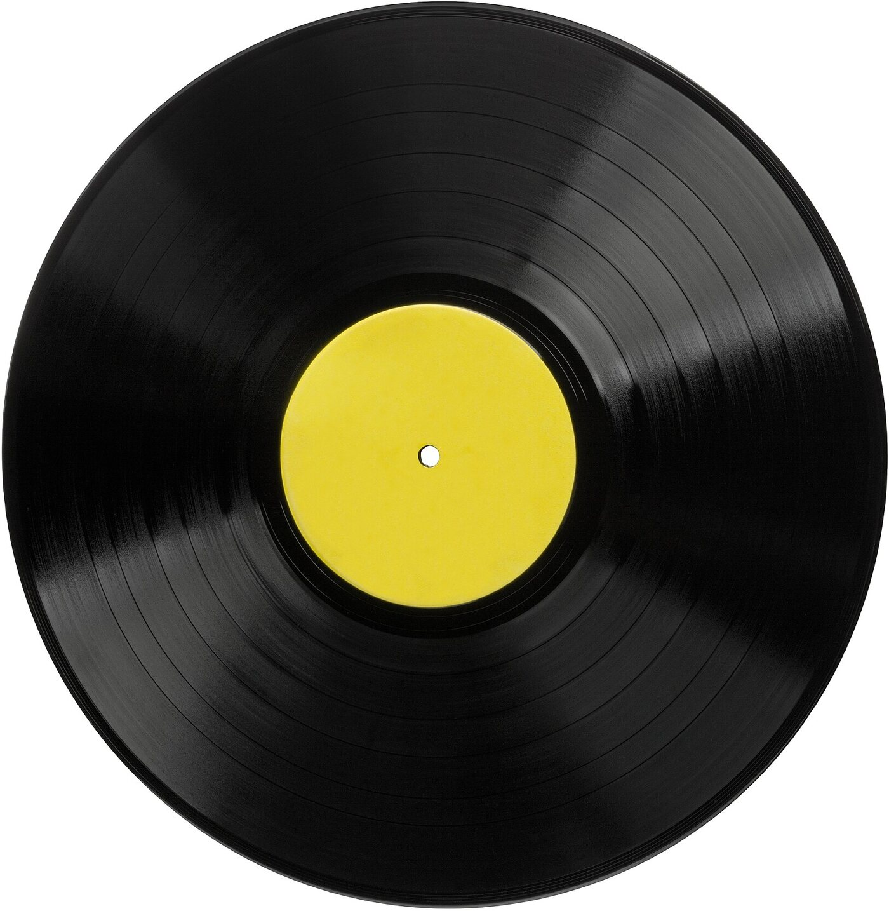
From the phonautograph of 1857 to the music
we stream today — how we hear, record and share sound.
Audio is a form of information that is represented and transmitted through sound.
Audio lets people pass on information without written text or images — we simply listen.
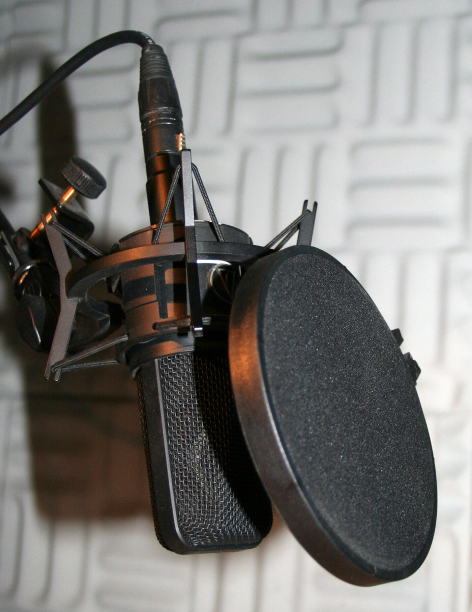
The microphone is the most common way to turn sound into a signal we can store.
Sound is created when an object vibrates. It is a physical wave — and it needs a medium, usually air, to travel.
Vibration → wave → eardrum → brain
Audio can be recorded, stored, edited, transmitted and played back.
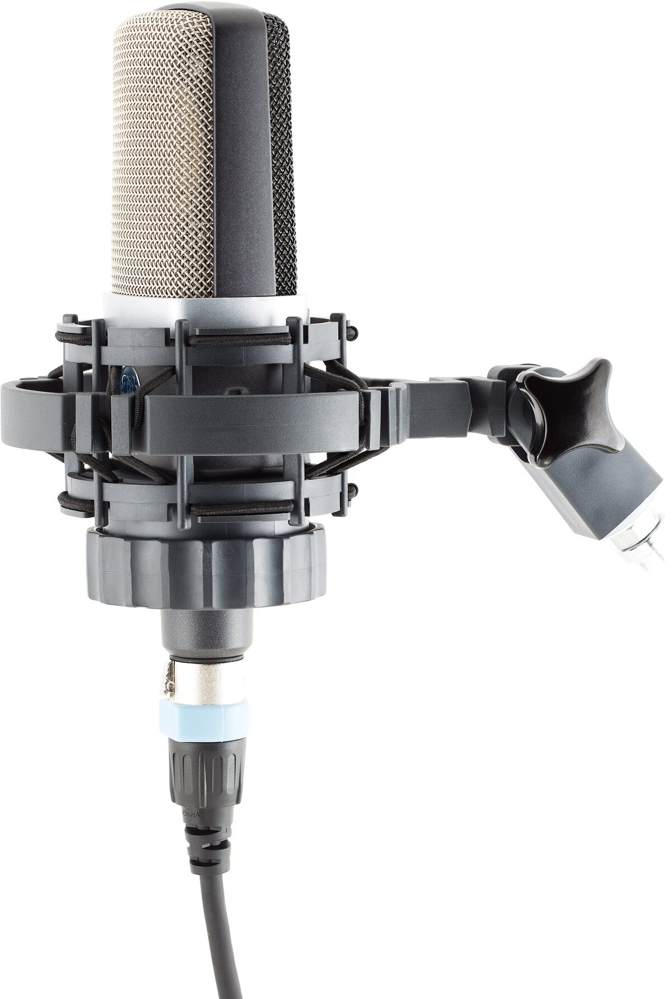
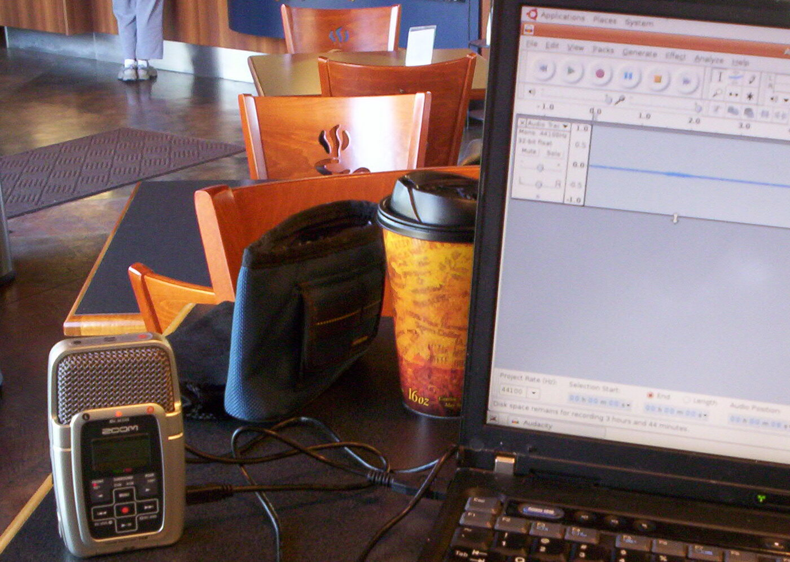
Sound is stored as one continuous signal — exactly the shape of the original wave.
Sound is stored as numerical data — thousands of samples per second that computers can process.
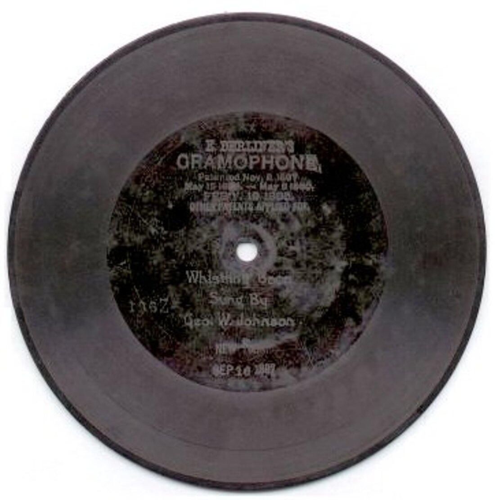
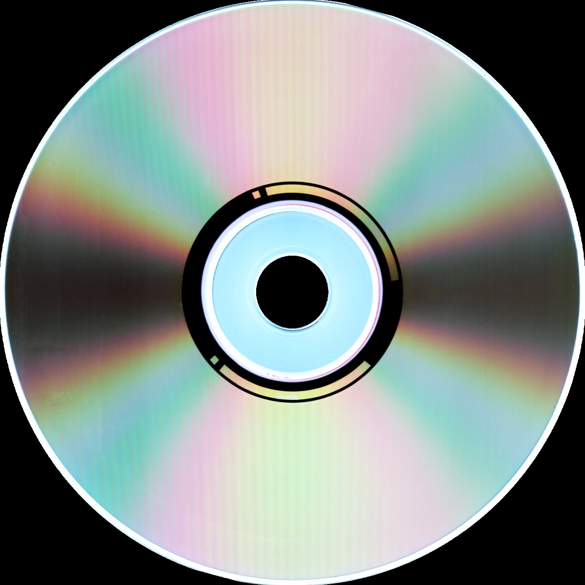
One continuous groove (analogue) versus a disc of numbers (digital).
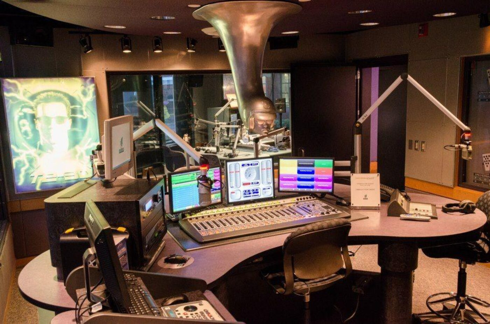
Sound is everywhere in modern life — it carries entertainment, news, learning and conversation.
Streaming, downloads, concerts and playlists.
Dialogue, score and sound effects carry the story.
News, talk shows and educational series.
Immersive worlds built from layers of sound.
Voice messages, video calls, live streams.
Audiobooks, lectures, language practice.
Navigation, alarms, assistants, alerts.
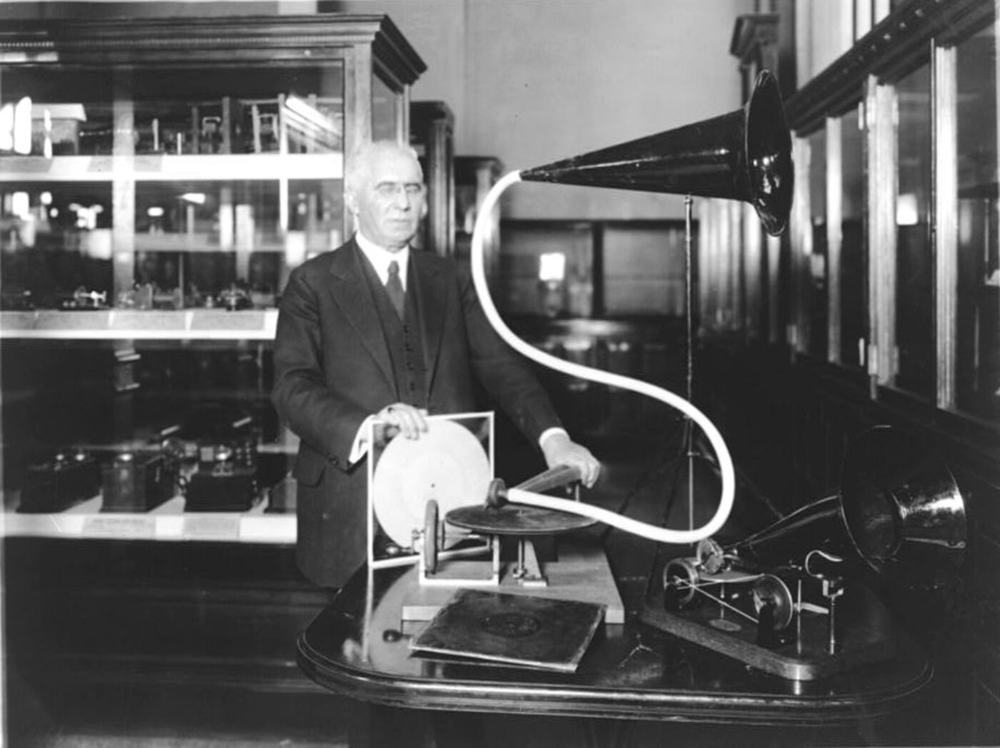
For most of human history, sound existed only while it was happening. People could speak, sing and play — but there was no way to keep the sound and hear it again.
Recording technology began in the 19th century, when inventors tried to make sound visible and permanent. It moves through four great eras:
Édouard-Léon Scott de Martinville, a French editor and typographer, patented it on 25 March 1857. He wanted a machine that could imitate the ear.
A horn collected the sound → a thin membrane vibrated → a stylus traced the vibrations onto a surface covered with soot. The result was a picture of the sound — a phonautogram.
It could record sound but not play it back. Scott wanted speech to "write itself", but he had no way to turn the lines into sound again.
Researchers scanned old phonautograms and used computers to turn the traces into digital audio — 19th-century sounds became audible again.
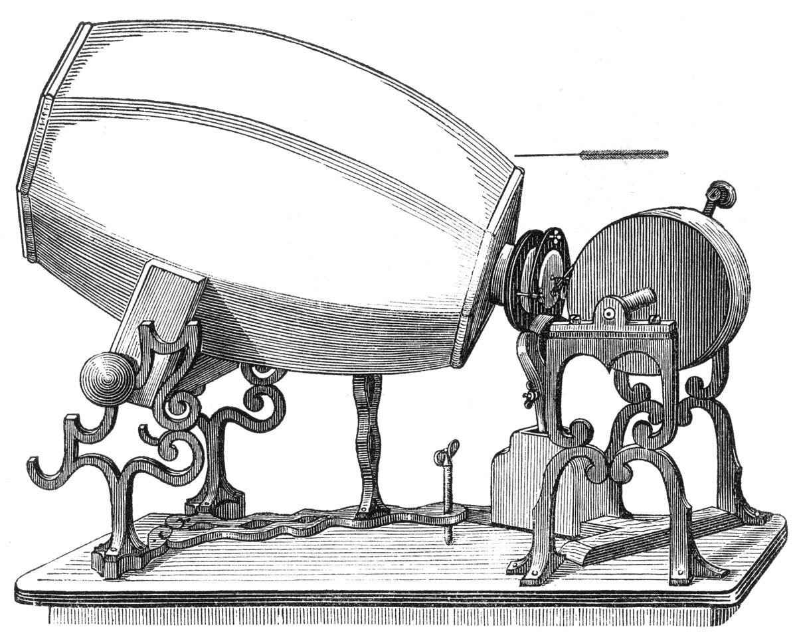
The first machine to record sound — it drew the wave instead of playing it.
Twenty years later Thomas Edison built a machine that could record sound and play it back — the first time a voice could be heard again.
A metal cylinder covered with tin foil rotated. Speech moved a diaphragm and a stylus, and the stylus cut indentations into the soft foil.
The stylus followed the same groove again, the diaphragm vibrated once more, and a horn made the sound audible.
Later versions used wax cylinders — better sound, but making thousands of copies of a cylinder was difficult. That is why discs eventually won.
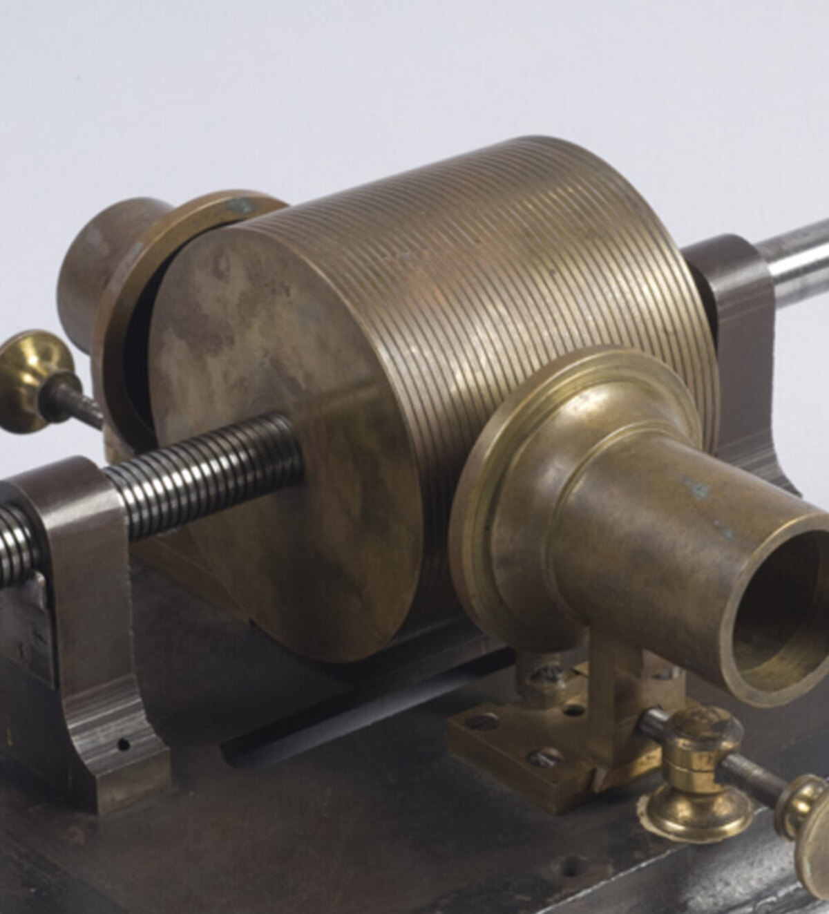
Edison's tinfoil phonograph, 1877 — the first machine to make sound play back.
Emile Berliner patented the gramophone in 1887. Instead of Edison's cylinder, his system used a flat disc.
The recording was cut as a zig-zag groove in the surface. A disc is easy to reproduce in large quantities — perfect for selling music to the public.
By the early 20th century discs dominated recorded music. Shellac records were replaced by vinyl, and new speeds followed: 78 rpm → 45 rpm singles → 33⅓ rpm LPs.
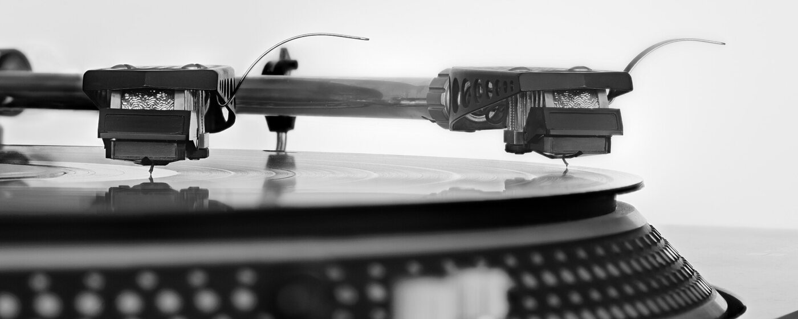
Berliner's own disc from 1897 — the zig-zag groove cut into a flat, mass-produced format.
Recording was purely mechanical. Performers had to play straight into a large recording horn, which passed the vibrations to the recording medium.
Microphones, electronic amplifiers and better equipment became standard. A much wider range of sounds could be captured, and volume and balance were controlled electronically.
Recordings became far more realistic. Quiet instruments and soft voices could be recorded effectively — and audio became central to radio and cinema.
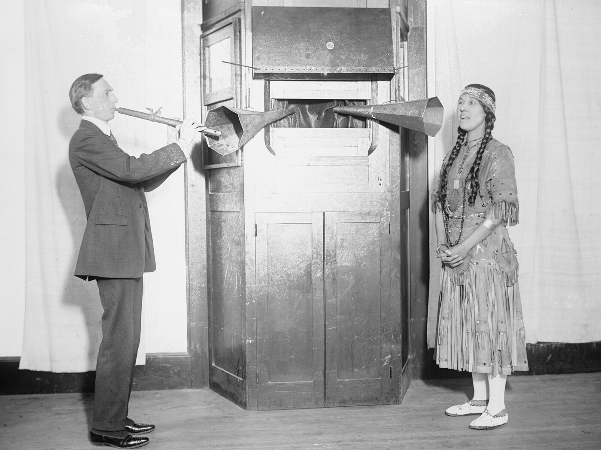
A recording session, 1920s — performers still facing the horn, before microphones took over.
Magnetic recording had already been shown in the late 19th century, but tape became important in the 20th. Developed in Germany in the 1930s, it became known worldwide after the Second World War.
Much better sound quality and longer recordings than earlier methods — and, crucially, it could be edited: tape could be cut and joined.
Tape was the standard of radio and music production. It is what made stereo and multi-track recording possible, and it led to the compact cassette for home use.
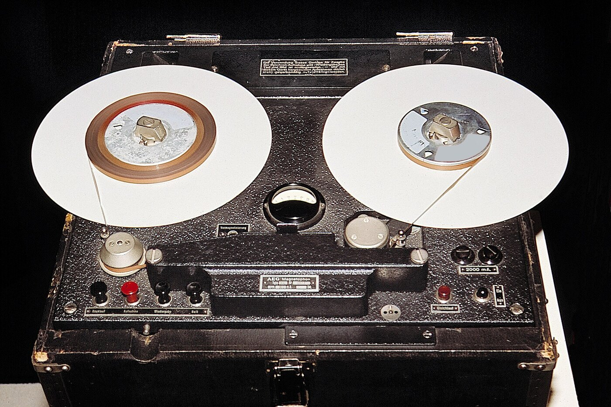
The AEG Magnetophon, 1939 — the machine that made tape recording practical.
Two channels captured the same performance from slightly different positions, giving a much wider, more realistic sense of space.
Musicians recorded different parts separately — drums, then bass, then vocals — and engineers combined them later. Modern music production was born.
Tape led to the compact cassette: small, cheap and reusable. For the first time ordinary people could record and listen at home.
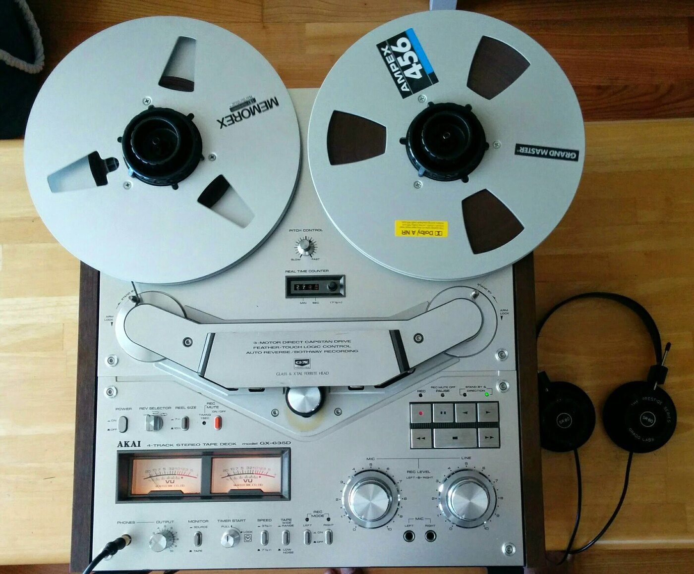
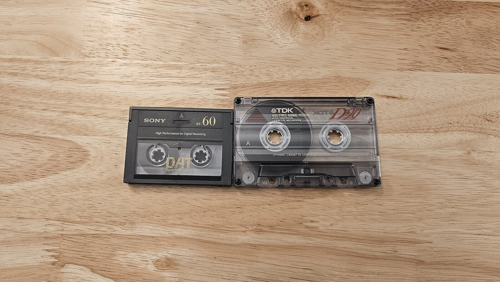
Sound stopped being one continuous physical signal. It became a series of numerical samples that computers can store, process, copy and edit.
The first popular music album recorded entirely digitally was released — and digital recording moved quickly into professional studios and home systems.
A file can be copied without losing quality, edited non-destructively and sent anywhere in the world. Audio becomes data.
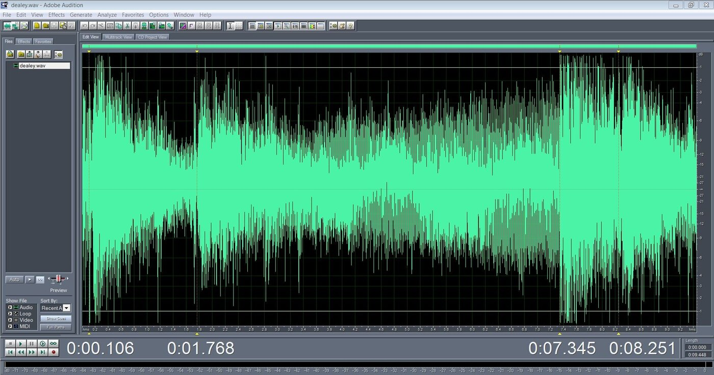
Digital audio on screen — the sound is now a waveform you can cut, move and process.
CDs were smaller and far more durable than vinyl records — no scratches from a stylus, no warping, and they could be handled and stacked freely.
A single disc could store a large amount of high-quality digital audio with no loss of quality when copied.
CDs became one of the most popular ways to listen to recorded music and defined the sound of the 1980s and 1990s.
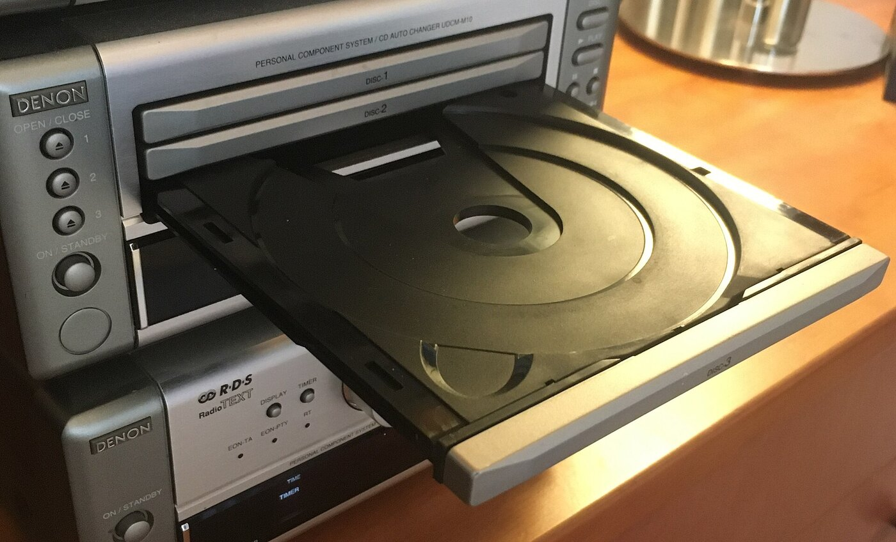
The CD player — a laser reads the digital pits on the disc, with no needle touching the surface.
Formats such as WAV and MP3 let audio exist as an ordinary computer file, instead of being tied to a physical recording medium.
MP3 mattered because compression makes files much smaller. You could store huge music collections and send them across the internet.
Digital audio became easy to copy and edit — with none of the wear, noise or effort of discs and tapes.
Sound without a medium — a music collection is now just an ordinary folder on a computer.
Instead of buying a physical recording, people download files or listen online.
Streaming has become the dominant way to listen — music, podcasts and audiobooks play through the internet without owning the file.
Audio can be recorded with something as simple as a smartphone, edited with computer software, and heard around the world in seconds.
Technology turned sound from something temporary into something that can be recorded, edited, stored and shared globally.
Record anywhere — a phone and a laptop are a complete audio studio.
Audiobooks and podcasts let people absorb information without constantly looking at a display.
Students practise listening, pronunciation and natural spoken rhythm by ear.
Music, dialogue and sound effects make films, games and presentations far more engaging.
Interviews, speeches, stories and historical recordings are kept alive and replayable forever.
Relax, improve your mood, or simply enjoy your free time.
Train your listening skills, pronunciation and understanding of English or any other language.
Pick up science, history, technology and other topics while you walk or travel.
Hear how pronunciation, dialogue and storytelling bring a book to life.
Read a text, play it back, and notice your own mistakes in pronunciation.